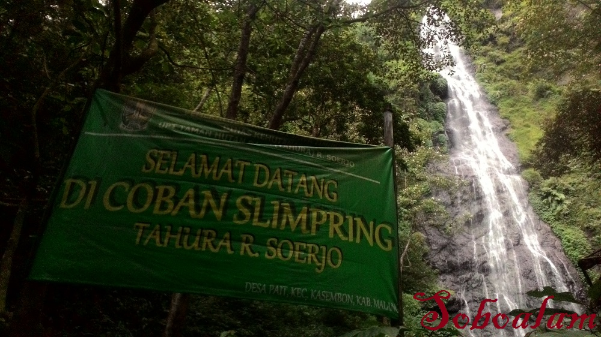

Wisata Desa Pait
COBAN SLIMPRING

Coban Slimpring merupakan salah satu wisata air terjun alami di Desa Pait, Kecamatan Kasembon, Kabupaten Malang yang menawarkan pesona alam yang masih sangat asri. Berbeda dengan air terjun lainnya, Coban Slimpring memiliki aliran air yang jernih dan menyejukkan, berpadu dengan suasana hutan hijau yang menenangkan. Terletak di kawasan perbukitan dengan udara segar khas pegunungan, tempat ini menjadi pilihan tepat bagi wisatawan yang ingin menikmati keindahan alam dan suasana damai jauh dari hiruk pikuk kota.
Nama Slimpring diambil dari nama sumber air yang mengalir di sekitar kawasan tersebut, yang sejak lama dimanfaatkan warga sebagai sumber air bersih alami. Daya tarik utama Coban Slimpring Malang terletak pada bentuk air terjunnya yang bertingkat dengan kolam alami di bawahnya, cocok untuk mandi, bermain air, atau sekadar bersantai menikmati pemandangan alam. Suara gemericik air yang berpadu dengan kicauan burung menambah kesan tenang dan alami bagi setiap pengunjung. Meski masih tergolong alami, Coban Slimpring Desa Pait sudah dilengkapi beberapa fasilitas dasar seperti area parkir, tempat duduk dari bambu, serta warung kecil milik warga sekitar. Bagi pecinta alam, perjalanan menuju lokasi air terjun bisa menjadi pengalaman menarik karena pengunjung harus berjalan kaki menyusuri jalur hutan ringan sekitar 10–15 menit dari area parkir. Akses menuju Desa Pait sendiri cukup mudah, dapat ditempuh dengan kendaraan roda dua maupun empat dari pusat Kecamatan Kasembon.
Untuk menikmati keindahan Coban Slimpring, pengunjung hanya dikenakan biaya tiket masuk sekitar Rp5.000 – Rp10.000 per orang, dengan biaya parkir tambahan yang terjangkau. Waktu terbaik untuk berkunjung adalah pagi hingga sore hari, terutama saat musim kemarau, ketika aliran airnya jernih dan debitnya stabil. Dengan pesona air terjun yang alami, udara segar pegunungan, serta keaslian lingkungan yang masih terjaga, Coban Slimpring di Desa Pait, Kasembon menjadi destinasi ideal bagi pecinta wisata alam di Malang yang ingin menikmati ketenangan dan keindahan panorama alami.